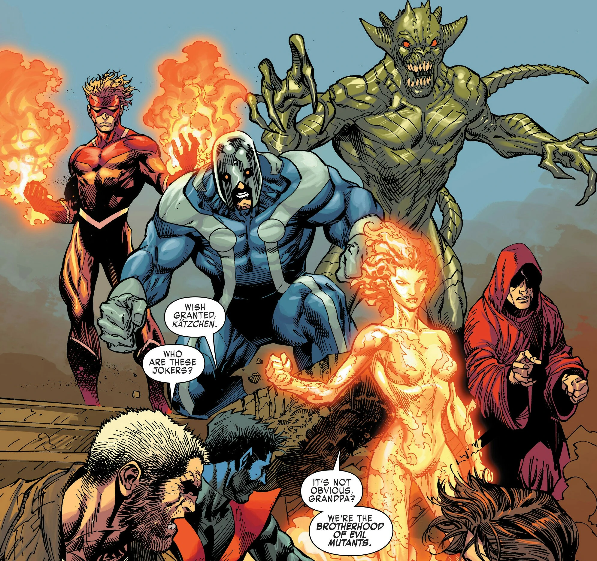
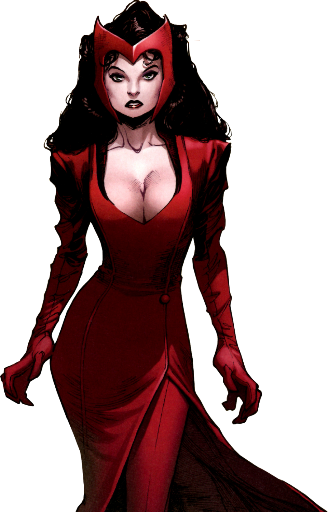
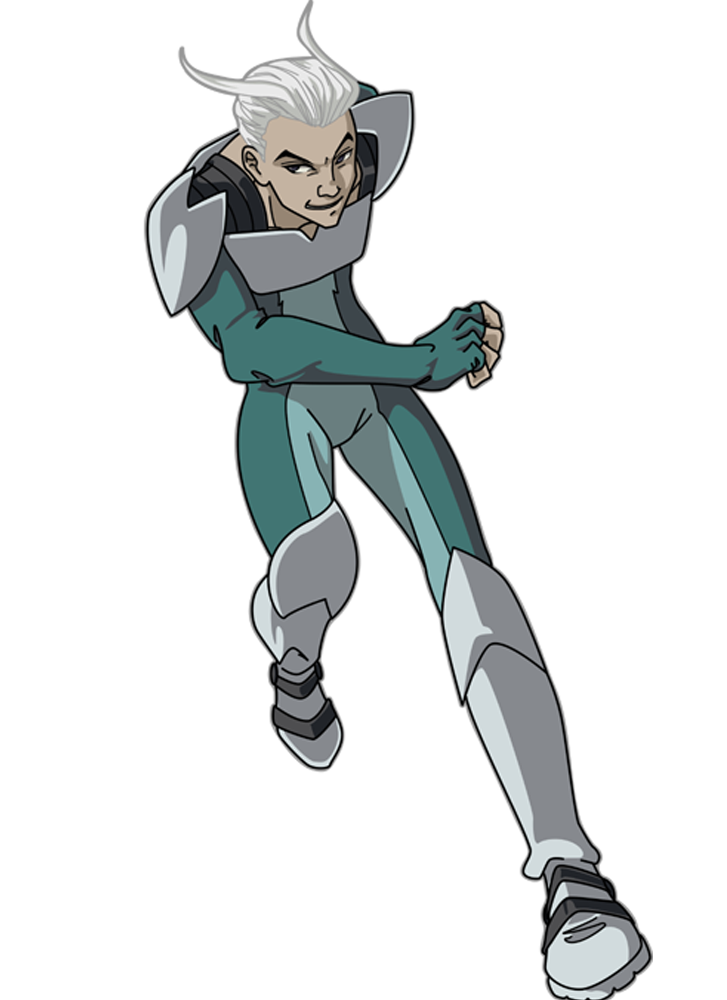
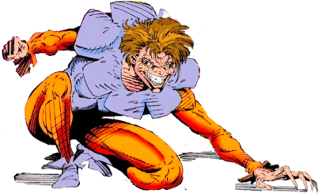
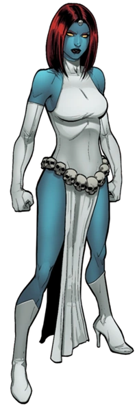
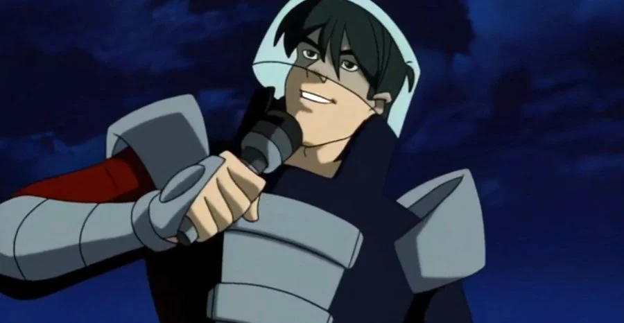
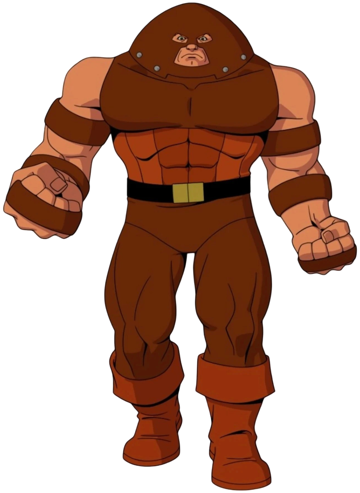
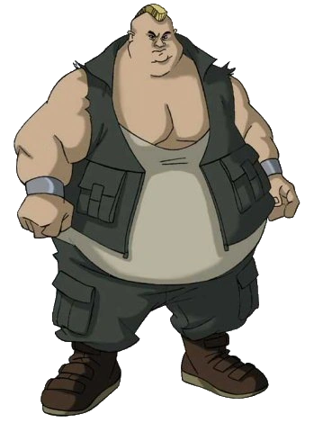

Irmandade de Mutantes

Magneto (Fundador e Líder)
História: A história de Magneto começa durante a Segunda Guerra Mundial, quando ainda era o jovem Max Eisenhardt. Ele lutava para sobreviver em um campo de concentração nazista. O trauma e a dor vividos nesse período moldaram sua visão do mundo e sua crença de que os mutantes precisam lutar para sobreviver.
Poder: Magneto é capaz de manipular campos magnéticos e todo o espectro eletromagnético. Ele controla metais, cria campos de força, pode voar, manipular o ferro no sangue, emitir pulsos eletromagnéticos e alterar matéria em nível subatômico.
Feiticeira Escarlate

História: Wanda Maximoff, conhecida como Feiticeira Escarlate, é uma mutante com a habilidade de alterar probabilidades. Isso significa que ela pode mudar as chances de algo acontecer, trazendo sorte para seus aliados e azar para seus inimigos.
Poder: Wanda é uma poderosa manipuladora de realidade. Seus poderes vêm da Magia do Caos, permitindo alterar a realidade, voar, usar telecinese, telepatia e criar construções de energia.
Mercúrio

História: Mercúrio apareceu em X-Men: The Animated Series como membro da Irmandade de Mutantes. Em X-Men: Evolution ele é um jovem que acabou de descobrir seus poderes e decide usá-los para ajudar a Irmandade.
Poder: Pietro Maximoff possui velocidade sobre-humana capaz de ultrapassar a velocidade do som. Ele possui reflexos extremamente rápidos, agilidade, resistência aprimorada e pode criar tornados ao correr.
Sapo

História: Mortimer Toynbee teve uma vida marcada por rejeição. Abandonado pelos pais ainda bebê, cresceu em um orfanato onde era constantemente ridicularizado por sua aparência.
Poder: Possui fisiologia anfíbia, com superforça nas pernas que permite saltos enormes. Também possui língua longa e forte, secreção de feromônios para controle mental, gosma ácida e fator de cura regenerativo.
Mística

História: Mística trabalhou como mercenária para organizações como a Hidra. Posteriormente liderou a segunda formação da Irmandade de Mutantes e tentou assassinar o senador Robert Kelly.
Poder: Mística é uma mutante metamorfa capaz de alterar completamente sua aparência, voz e impressões digitais para copiar qualquer pessoa. Ela também envelhece muito lentamente.
Avalanche

História: Dominikos Petrakis é um imigrante grego recrutado por Mística para integrar a Irmandade de Mutantes, enfrentando os X-Men diversas vezes.
Poder: Avalanche gera ondas vibratórias sísmicas com as mãos, capazes de causar terremotos, rachar o solo e destruir construções.
Juggernaut

História: Cain Marko teve uma infância difícil marcada por violência e rejeição. Isso o levou a desenvolver uma visão de que o mundo pertence aos mais fortes.
Poder: Juggernaut possui força imensa e invulnerabilidade mística graças à Joia de Cyttorak. Quando começa a correr ele se torna praticamente imparável.
Blob

História: Fred Dukes era um jovem comum até que seu corpo começou a crescer anormalmente, tornando-o alvo de zombarias e humilhações.
Poder: Blob possui superforça, resistência enorme e pele elástica. Sua principal habilidade é tornar-se praticamente impossível de mover quando fixa seu corpo ao chão.
.jpeg)